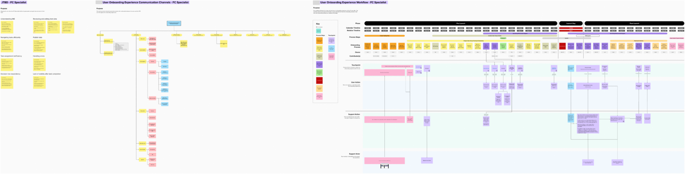
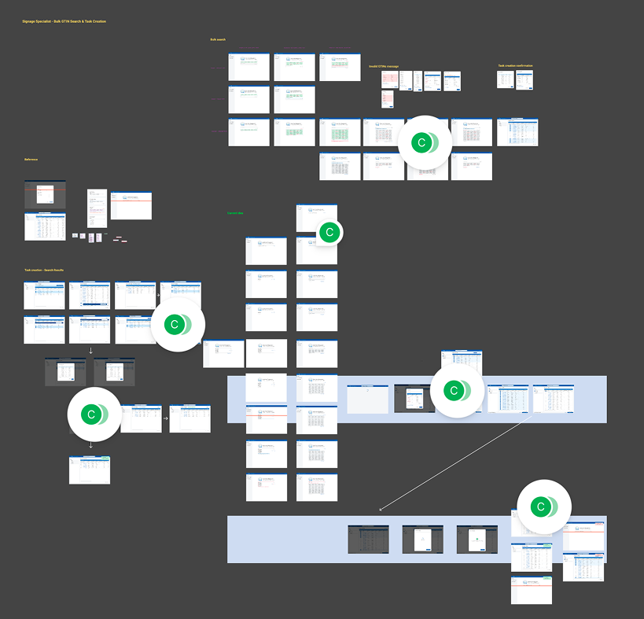

I started in documentary filmmaking, chasing stories that could move an audience anywhere in the world. I moved to anthropology to live inside the questions I was asking. Now I practice human-centered design, because I don't want to stop at the insight. I want to build the thing it points to.

A Double Diamond process, from SME interviews to a shipped three-layer support framework, bridging fragmented legacy systems and spreadsheets to a centralized item-management platform.
Read the case study →
Hundreds of GTINs at once, not one at a time: a bulk search flow with inline task creation for the platform's item-management workflow.
Read the case study →"On a complex initiative that will migrate 8 user groups to a modern system, Franklin naturally applied systems thinking to untangle 20+ tricky workflows to create 6+ scalable user guides and an AI chatbot. He conducted thorough research, extracted meaningful insights, and turned them into polished, easily understood materials."
Steven SteinerPrincipal User Experience Architect, Kroger
"The quality of Franklin's contributions exceeded expectations. In particular, the onboarding experience he developed elevated our vision beyond what we thought possible and established a new standard for how we approach onboarding within our organization."
David SmithSenior Product Manager, Kroger
"Franklin stood out for his initiative and curiosity. He proactively reached out to teammates and cross-functional partners to build context, validate his understanding, and strengthen his work, and he was consistently focused on creating outputs that would be useful and scalable."
Jerad RainesSenior Product Designer, Kroger